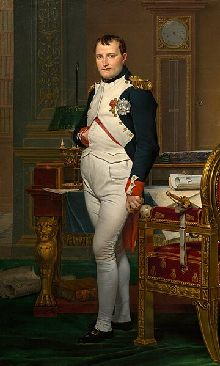

Principal
Geografia
Atracții
Bucătăria
Istoria
Istoria Franției
Evenimente importante:
843 - Tratatul de la Verdun
1789 - Marea Revoluție Franceză
1905 - Legea cu privire la separarea Bisericii de Stat
Oameni celebri:
Napoleon Bonaparte, Charles de Gaulle, Marie Curie
